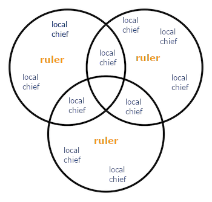

Insular (Island) South-east Asia
Insular/Maritime South-east Asia is made out of >20,000 islands.
Island countries in South-East Asia
- Singapore
- Brunei
- Malaysia
- Indonesia
- Philipines
- Timor-Leste
Geography
Insular Southeast Asia is surrounded by oceans and seas.
- Oceans, seas and straits provide access to Island South-East Asia
- This shaped travel in the region
- Such vital connections also shape the economy
- The earliest kingdoms and empires in Insular Southeast Asia were formed along important trade routes
Rivers
- Used less for travel as they were relatively shorter
- Rivers are limited to a few regions (such as in Java, Indonesia)
- Provided fertile farmland for large-scale crop cultivation, such as rice
- Future Europeans would be interested in using such fertile land to grow cash crops
Economy
Many states were formed along the coasts of insular Southeast Asia due to the importance of islands and seas.
Characteristics of early South-east Asian economies
- Empires were based on trade
- These states could become very rich and powerful, e.g. Srivijaya
- Oceans and seas provided food, e.g. fish
- Sought-after marine products such as pearls were lucrative trade products
Examples of items traded in Southeast Asia
| Spices |
Produce |
Pottery |
- pepper
- mace
- cinnamon
- cloves
- nutmeg
|
- sea cucumber
- hornbill casque
- sandalwood
|
|
Political Systems
Political characteristics of early political systems in SEA
- Many nation-states without fixed borders
- States were based off the personal authority of their rulers (e.g kings)
- Boundaries were not fixed and could change at any time
(this is understandable if you play civilisation)
- Establishment of new villages
- Wars and conquest
Ruling Authority
Rulers were expected to have good characteristics, such as:
- Ability to demonstrate leadership and display charisma
- Military prowess, winning wars
- Making good judgements
- Economy (if the rain is shit and all your crops fail your leader sucks)
Divine right to rule
Rulers were believed to have divine origins and powers, which is reflected in:
- Religious symbols and special objects dedicated to rulers
- Thrones
- Royal umbrella
- Sacred dagger/sword/other weapon
- Formal rituals (e.g. coronations)
Influence of rulers
Pre-colonial borders were more fluid and constantly changing as different rulers wielded different amounts of power and influence. As such, the size and boundaries of the state would change accordingly.

Areas further from a ruler's main power centre
- Further regions are harder to access and control
- Rulers would have to depend on local chiefs to enforce their order.
- Local 'lower' rulers in peripheral regions would be more independent
- Local chiefs could pledge allegiance to 2 different rulers at any one time
- Local chiefs held the power to ignore their superior and switch allegiance
(basically feudalism)
People
Traders from many parts of Asia and the Middle East came to insular South-east Asia to trade due to its openness to trade (the Brits will use this as justification for colonialism somewhere down the line.)
Culture and Religion
The importance of trade resulted in large amounts of social interaction between locals and many different foreign traders.
--> Caused spread of different religions in SEA